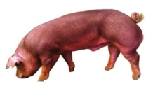
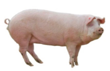
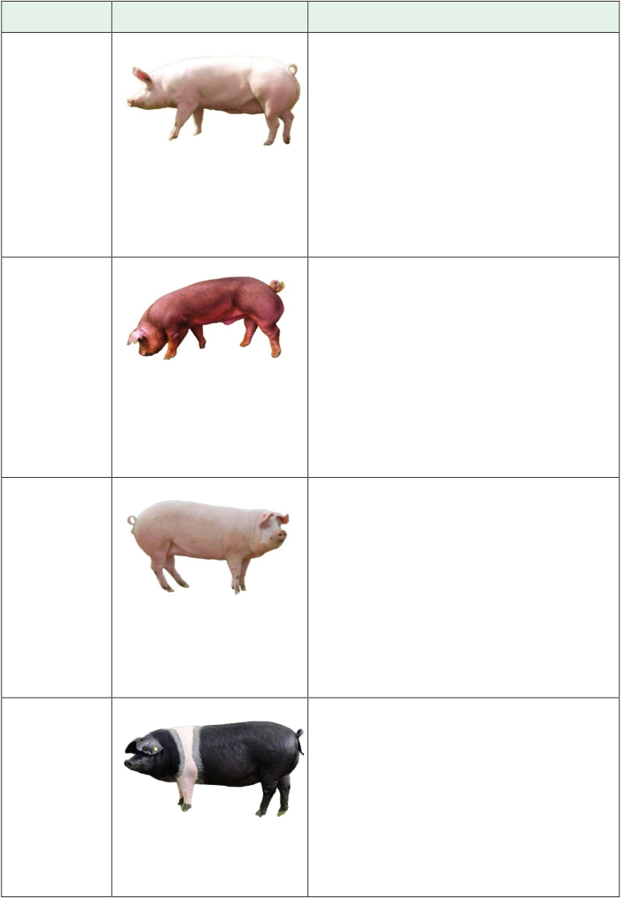

Agriculture for Secondary Schools
Table 7.1: Some common pig breeds raised in Tanzania
Breed
Image
Description
Yorkshire/
Large white
breed
Origin: England
Physical Features: White with erect ears
Notable traits: Known for excellent
mothering ability, large litters, and high
milk production. They have good growth
rates and are often used in crossbreeding
programs for their genetic contribution
to improved production.
Duroc
breed
Origin: United States
Physical features: Red or reddish-brown
with drooping ears.
Notable traits: Known for fast growth
rates, high feed efficiency, and quality
meat with good marbling. Durocs
are hardy and adapt well to various
environments.
Landrace
breed
Origin: Denmark
Physical features: White with drooping
ears
Notable traits: include good mothering
ability, large litter, and high milk
production. They have long bodies,
making them ideal for bacon production,
and are often used in crossbreeding.
Saddleback
breed
Origin: England
Physical features: Black with a white belt,
like Hampshire, but with drooping ears
Notable traits: Have good mothering
ability, adaptability to outdoor systems,
and producing flavourful meat. They are
hardy and have good foraging ability.
109
Student’s Book Form Two


